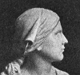
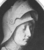
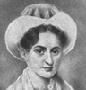
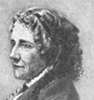
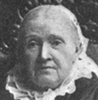
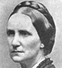

Collective Biographies of WomenAn Annotated Bibliography
Alison Booth
419.
Horton, Edith. A Group of Famous Women: Stories of Their Lives. Boston and New York: Heath, 1914.
Search OCLC WorldCat for this title.
Search Google Books for this title.
Horton, Edith. A Group of Famous Women: Stories of Their Lives. Boston and New York: Heath, 1914.
TOC: Joan of Arc; Dorothy Payne Madison; Elizabeth Fry; Lucretia Mott; Mary Lyon; Dorothea Dix; Margaret Fuller; Harriet Beecher Stowe; Maria Mitchell; Lucy Stone; Julia Ward Howe; Queen Victoria; Florence Nightingale; Susan B. Anthony; Mary A. Livermore; Clara Barton; Harriet Hosmer; Louisa M. Alcott; Frances E. Willard; Women on the Battlefield and in Pioneer Life.
-
Joan of Arc
-
Joan of Arc
-
Dorothy Payne Madison
-
Lucretia Mott
-
Mary Lyon
-
 Dorothea Dix
Dorothea Dix -
 Margaret Fuller D'Ossoli
Margaret Fuller D'Ossoli -
Harriet Beecher Stowe
-
Maria Mitchell
-
Lucy Stone
-
Julia Ward Howe
-
Queen Victoria
-
Florence Nightingale
-
Susan B. Anthony
-
Mary A. Livermore
-
Clara Barton
-
Harriet Hosmer
-
Louisa May Alcott
-
Frances Willard
-
Molly Pitcher
Search OCLC WorldCat for this title.
Search Google Books for this title.